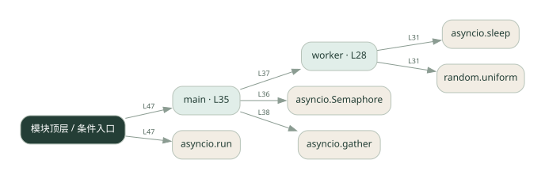

2-8 · 全课程第 28 节
并发数量控制
concurrency.py
源码快照 650c04780882 · 静态解析 · 2026-09-10
01 / 要完成的事
用信号量限制同时执行的 worker 数量。
02 / 为什么要做
一次启动过多请求会占满连接或触发服务限制。
03 / 当前代码状态
主要展示本地计算、内存状态或模拟流程；是否写文件/启动子进程请看调用表。 本次只做静态解析，没有运行练习，也没有替你填写或修改原代码。
04 / 调用图
打开大图 ↗实线：源码中的直接调用；虚线：函数引用/注册、动态调用或按方法名推断的候选。L 是调用所在源码行号。箭头不表示执行顺序或每次必经；分支、循环、异步调度及框架内部调用需结合源码。灰色是外部/未解析目标，橙色是动态分发；省略 print、len 和常规容器操作以减少干扰。孤立函数可能尚未接入。

先从 main 及模块入口 出发，沿箭头找到本文件函数，再查看外部调用或动态分发。右侧调用清单保留所有静态调用点，能回到原文件逐行对照。
05 / 函数定位
| 函数 / 定义行 | 职责（源码注释） | 内部调用 |
|---|---|---|
workerL28 | 模拟一个 worker：受信号量限制，最多 sem 个同时执行 | asyncio.sleep, random.uniform |
mainL35 | 以源码函数体为准；下列调用展示其依赖。 | asyncio.Semaphore, worker, range, asyncio.gather, print |
这样做的优点
并发度可调，避免无限制拥挤。
代价与局限
限制同时运行数量不等于限制每秒请求数；慢任务会长期占用名额。
适用场景
大量独立的等待型子任务。
不宜直接照搬
供应商要求严格 QPS 限制却没有额外速率控制的情况。
动手检验理解
把上限改为 1 和 3，记录同时运行数量与总耗时。
有未实现位置时先预测，再补齐验证。能启动不等于逻辑正确。
查看全部 13 个静态调用 / 引用点
| 调用方 | 目标 | 源码行 | 类型 |
|---|---|---|---|
| worker | asyncio.sleep | 31 | 调用 |
| worker | random.uniform | 31 | 调用 |
| main | asyncio.Semaphore | 36 | 调用 |
| main | worker | 37 | 调用 |
| main | range | 37 | 调用 |
| main | asyncio.gather | 38 | 调用 |
| main | print | 40 | 调用 |
| <模块入口> | print | 44 | 调用 |
| <模块入口> | print | 45 | 调用 |
| <模块入口> | print | 46 | 调用 |
| <模块入口> | asyncio.run | 47 | 调用 |
| <模块入口> | main | 47 | 调用 |
| <模块入口> | print | 48 | 调用 |